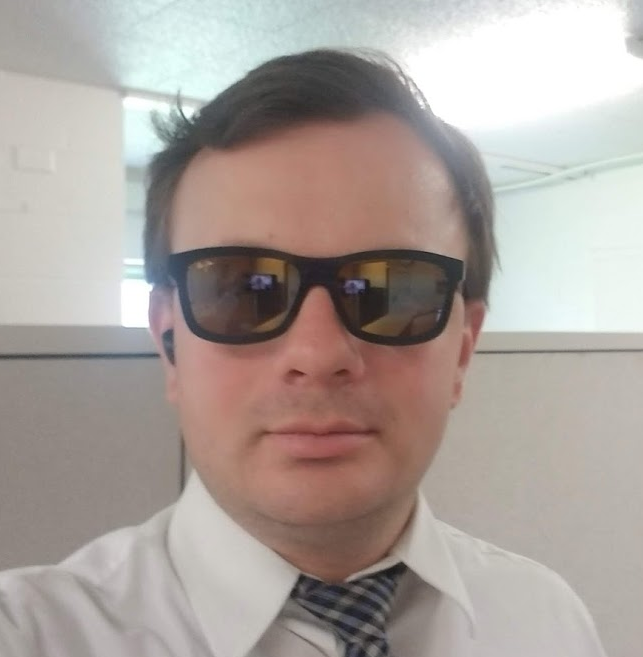

Software developer · MBA candidate · Utah
Building at the intersection of tech & business.
I’m Lucas, a software developer and BYU Marriott MBA candidate. I like turning messy problems into useful products, clearer decisions, and work people can actually use.

Curious by default.
Builder by habit.
Builder by habit.
UTAH
USA
USA
A few ways I spend my time
Work, school, side builds.
From shipping software to studying a market, I enjoy learning by making something concrete.
My background
Technical roots.
Business lens.
I started in software engineering and have worked across software development, automation, enterprise systems, and IT strategy. I’m now pursuing an MBA at BYU Marriott, where I’m building on that technical foundation with strategy, customer, and market analysis.
Software developmentAutomationIT strategyProduct thinkingAI exploration
Off the screen
Outside is part of the picture.
When I’m not working or studying, I’m usually looking for a trail, a mountain, or an excuse to fire up the grill.
↗
Mountain biking
Long rides, open roads
Long rides, open roads
◒
Snowboarding
Best kind of winter day
Best kind of winter day
⛰
Dirt biking
Finding the next trail
Finding the next trail
⌁
Cooking outside
People, food, fire
People, food, fire